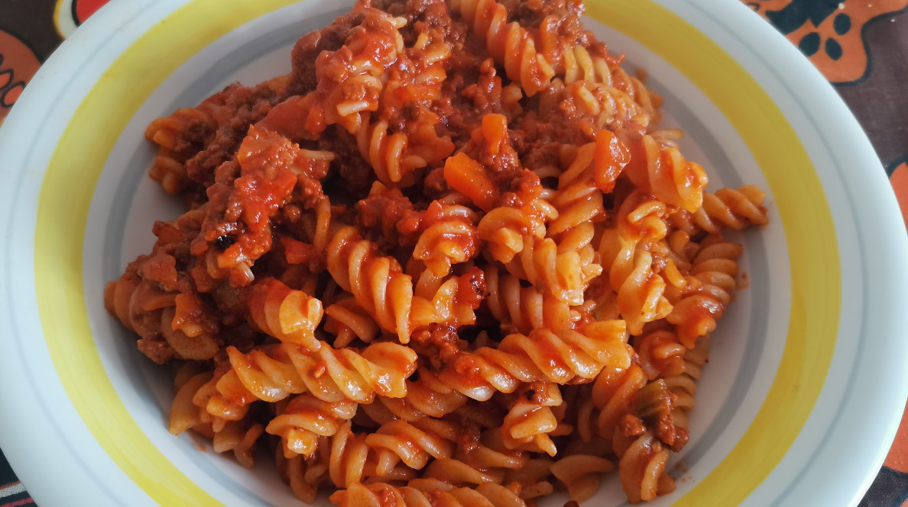

 PREP TIME
PREP TIME
 TOTAL TIME
TOTAL TIME
DIFFICULTY
Medium
CUISINE
Italian
1h
7h
> Main courses
Ragù alla bolognese
/'Bolognese (meat) sauce'/
Origin
Late 1800s, Italy.
Ingredients for 8 servings
Ragù
- 8 tomatoes (around 600-800g. I started using passata instead and it's working quite well)
- Vegetable stock (keep reading)
- 2 carrots
- 1 stalk of celery
- 1 onion
- 250g beef (minced. You can substitute part of this for veal)
- 250g pork (minced)
- Wine (2/3 glass, dry white wine is traditional)
- 80g milk (1/3 of a cup)
- Nutmeg (1/3 of a tsp)
- Black pepper
- Salt
- 36g olive oil (3 tbsp)
Vegetable stock
- 1 carrot
- 1 stalk of celery including leaves
- 1 onion
Pasta
- 880g pasta
- Grated cheese (parmesan does well)
- Salt
Utensils
Hand blender
Kitchen pot
Steps
Stock
- In a pot pour 1 L of water with a pinch of salt, a carrot, onion and a stalk of celery. Include here too all the leaves from the ragù's celery.
- Bring up to a simmer and leave for one hour. Only use the liquid afterwards.
Start cooking the ragù
- With a drop of oil cook the meat until brown, remove and set aside.
- Cook the finely chopped onion with the oil until transparent.
- Add the rest of the elements of the soffritto (celery and carrots) finely diced.
- When brown (the longer, the sweeter, but be careful not to burn it), add the meat back in, together with the wine.
- When the wine fully evaporates add the mashed tomatoes, black pepper, a pinch of salt, nutmeg and the stock. Bring to a simmer.
The long cooking process
- The first 3 hours we will leave it uncovered, checking for water every now and then. There must be enough to cover at all times.
- Now without adding more water, leave it uncovered until it reaches a slightly thick consistency. Add the milk, check and correct for salt.
- Leave it almost fully covered until the total cooking time since you added the meat adds up to 6 hours.
Variations
!
NUTRITION FACTS
Per serving
Calories640 kcal
Fat19 g
Carbohydrates88 g
Sugar6 g
Protein26 g
Vit. A12% DV
Vit. B1115% DV
Vit. B235% DV
Vit. B357% DV
Vit. B57% DV
Vit. B621% DV
Vit. B1237% DV
Vit. C13% DV
Vit. E9% DV
Vit. K15% DV
Potassium20% DV
Phosphorus19% DV
Magnesium5% DV
Iron33% DV
Zinc21% DV
Copper8% DV
Selenium22% DV
CULINARY TIP
Making sure the soffritto is well cooked and the wine is completely reduced is very important to ensure the dish stays on the sweet and not too acidic side. It's also not too bad to correct with a tsp of sugar if mistakes are made.